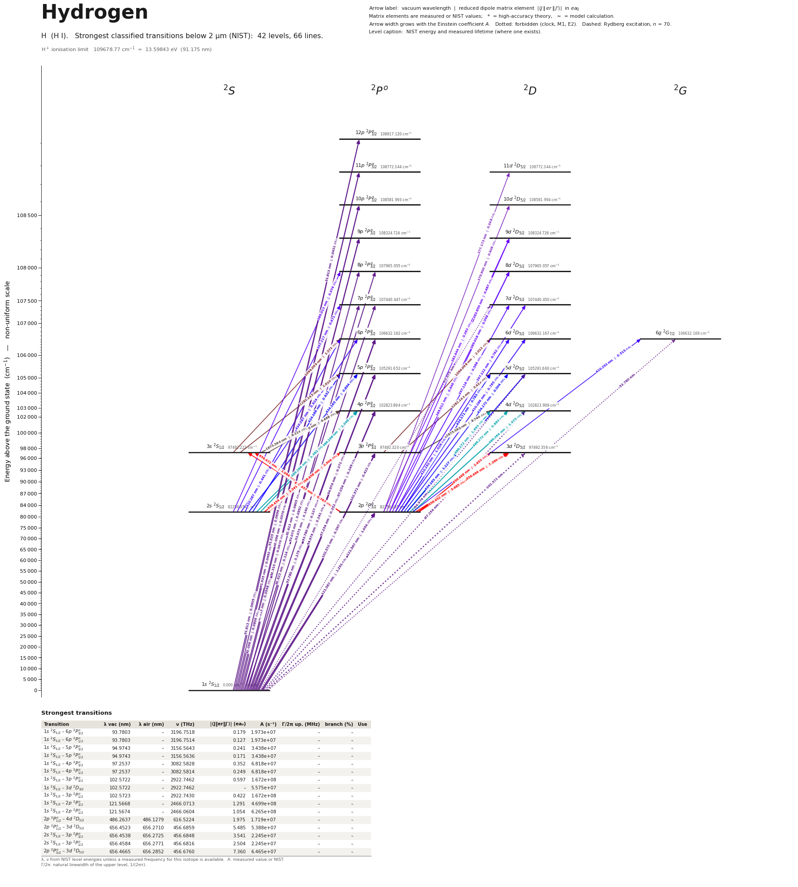

Hydrogen energy level diagram
Energy levels and transitions of neutral hydrogen (H I): the 74 strongest classified lines below 2 µm from the NIST Atomic Spectra Database and the 45 levels they connect, each line with its vacuum wavelength, frequency and, for 65 of them, the reduced dipole matrix element derived from the NIST transition rate. Measured lifetimes, transition rates, hyperfine constants and isotope shifts from the literature are included, each with its citation.
Hover a line or a level to isolate it, click to keep it selected. Scroll to zoom, drag to move.

Download: diagram (PDF) diagram (SVG) transitions (CSV) levels (CSV) source code

Key transitions of hydrogen
| Transition | λ vac (nm) | λ air (nm) | ν (THz) | |⟨J‖er‖J′⟩| (ea₀) | A (s⁻¹) | Γ/2π up. (MHz) | branch (%) | Use |
|---|---|---|---|---|---|---|---|---|
| 1s 2S1/2 – 3p 2P°1/2 | 102.5723 | – | 2922.743279 | 0.422 | 1.672e+08 | 30.19 | 88.2 | 1S-3S two-photon transition |
| 1s 2S1/2 – 3s 2S1/2 | 102.5723 | – | 2922.743279 | – | – | 1.005 | – | 1S-3S two-photon transition |
| 1s 2S1/2 – 2p 2P°3/2 | 121.5668 | – | 2466.0713 | 1.491 | 6.265e+08 | 99.71 | 100 | Lyman-alpha, 121.6 nm: Doppler laser cooling of magnetica… |
| 1s 2S1/2 – 2s 2S1/2 | 121.5673 | – | 2466.061413 | – | 8.229e+00 | 1.31e-06 | 100 | 1S-2S two-photon transition |
| 1s 2S1/2 – 2p 2P°1/2 | 121.5674 | – | 2466.0604 | 1.054 | 6.265e+08 | 99.71 | 100 | Lyman-alpha, 121.6 nm: Doppler laser cooling of magnetica… |
| 2s 2S1/2 – 8d 2D5/2 | 389.0127 | 388.9025 | 770.649562 | – | – | – | – | 2S-8D two-photon transition |
| 2p 2P°1/2 – 8d 2D3/2 | 389.0127 | 388.9025 | 770.649504 | 0.446 | 1.710e+06 | – | – | 2S-8D two-photon transition |
| 2s 2S1/2 – 8p 2P°3/2 | 389.0127 | 388.9025 | 770.649504 | 0.374 | 1.202e+06 | – | – | 2S-8D two-photon transition |
| 2s 2S1/2 – 8d 2D3/2 | 389.0127 | 388.9025 | 770.649504 | – | – | – | – | 2S-8D two-photon transition |
λ, ν from NIST level energies unless a measured frequency for this isotope is available. A: measured value or NIST. Γ/2π: natural linewidth of the upper level, 1/(2πτ).
1H hyperfine structure (I = 1/2)
| Level | A (MHz) | B (MHz) | Shift of each F level from the centre of gravity (MHz) |
|---|---|---|---|
| 1s 2S1/2 | 1420.405752 | – | F=0: -1065.30 F=1: +355.10 |
| 2p 2P°1/2 | 59.1695(6) | – | F=0: -44.38 F=1: +14.79 |
| 2s 2S1/2 | 177.556834(7) | – | F=0: -133.17 F=1: +44.39 |
| 2p 2P°3/2 | 11.82580(12) | – | F=1: -14.78 F=2: +8.87 |
| 3p 2P°1/2 | 17.53180(18) | – | F=0: -13.15 F=1: +4.38 |
| 3s 2S1/2 | 52.609473 | – | F=0: -39.46 F=1: +13.15 |
| 3d 2D3/2 | 2.1025(20) | – | F=1: -2.63 F=2: +1.58 |
| 3p 2P°3/2 | 3.50396(3) | – | F=1: -4.38 F=2: +2.63 |
| 3d 2D5/2 | 0.9003(9) | – | F=2: -1.58 F=3: +1.12 |
| 4p 2P°1/2 | 7.39623(7) | – | F=0: -5.55 F=1: +1.85 |
| 4s 2S1/2 | 7.39623(7) | – | F=0: -5.55 F=1: +1.85 |
| 4d 2D3/2 | 0.8870(9) | – | F=1: -1.11 F=2: +0.67 |
| 4p 2P°3/2 | 1.478235(15) | – | F=1: -1.85 F=2: +1.11 |
| 4d 2D5/2 | 0.3798(4) | – | F=2: -0.67 F=3: +0.47 |
| 5p 2P°1/2 | 3.78586(4) | – | F=0: -2.84 F=1: +0.95 |
| 5d 2D3/2 | 0.4541(4) | – | F=1: -0.57 F=2: +0.34 |
| 5p 2P°3/2 | 0.756857(8) | – | F=1: -0.95 F=2: +0.57 |
| 5d 2D5/2 | 0.19447(20) | – | F=2: -0.34 F=3: +0.24 |
| 6p 2P°1/2 | 2.191470(22) | – | F=0: -1.64 F=1: +0.55 |
| 6d 2D3/2 | 0.26280(25) | – | F=1: -0.33 F=2: +0.20 |
| 6p 2P°3/2 | 0.437996(4) | – | F=1: -0.55 F=2: +0.33 |
| 6d 2D5/2 | 0.11253(10) | – | F=2: -0.20 F=3: +0.14 |
| 7p 2P°1/2 | 1.380050(14) | – | F=0: -1.03 F=1: +0.34 |
| 7d 2D3/2 | 0.16550(15) | – | F=1: -0.21 F=2: +0.12 |
| 7p 2P°3/2 | 0.275823(3) | – | F=1: -0.34 F=2: +0.21 |
| 7d 2D5/2 | 0.07087(7) | – | F=2: -0.12 F=3: +0.09 |
| 8p 2P°1/2 | 0.924525(9) | – | F=0: -0.69 F=1: +0.23 |
| 8d 2D3/2 | 0.11088(11) | – | F=1: -0.14 F=2: +0.08 |
| 8p 2P°3/2 | 0.184780 | – | F=1: -0.23 F=2: +0.14 |
| 8d 2D5/2 | 0.04748(5) | – | F=2: -0.08 F=3: +0.06 |
| 9p 2P°1/2 | 0.649323(6) | – | F=0: -0.49 F=1: +0.16 |
| 9d 2D3/2 | 0.07787(8) | – | F=1: -0.10 F=2: +0.06 |
| 9p 2P°3/2 | 0.129776 | – | F=1: -0.16 F=2: +0.10 |
| 9d 2D5/2 | 0.03334(3) | – | F=2: -0.06 F=3: +0.04 |
| 10p 2P°1/2 | 0.473356(5) | – | F=0: -0.35 F=1: +0.12 |
| 10d 2D3/2 | 0.094607 | – | F=1: -0.12 F=2: +0.07 |
| 10p 2P°3/2 | 0.094607 | – | F=1: -0.12 F=2: +0.07 |
| 10d 2D5/2 | 0.024307(23) | – | F=2: -0.04 F=3: +0.03 |
| 11p 2P°1/2 | 0.355639(4) | – | F=0: -0.27 F=1: +0.09 |
| 11p 2P°3/2 | 0.071080 | – | F=1: -0.09 F=2: +0.05 |
| 11d 2D5/2 | 0.018263(17) | – | F=2: -0.03 F=3: +0.02 |
| 12p 2P°1/2 | 0.273933(3) | – | F=0: -0.20 F=1: +0.07 |
| 12p 2P°3/2 | 0.054749 | – | F=1: -0.07 F=2: +0.04 |
Measured A, B constants; sources in the data file.
Isotope shifts
| Transition | λ vac (nm) | Isotopes | Shift (MHz) |
|---|---|---|---|
| 1s 2S1/2 – 2s 2S1/2 | 121.567 | 2-1 | 670994.334606(15) |
| 2s 2S1/2 – 8d 2D5/2 | 389.013 | 2-1 | 209691.265(9) |
| 2p 2P°1/2 – 8d 2D3/2 | 389.013 | 2-1 | 209691.252(10) |
| 2s 2S1/2 – 8p 2P°3/2 | 389.013 | 2-1 | 209691.252(10) |
| 2s 2S1/2 – 8d 2D3/2 | 389.013 | 2-1 | 209691.252(10) |
Shift = ν(first isotope) − ν(second isotope).
Listed H transitions below 2 µm
| Lower level | Upper level | λ vacuum (nm) | λ air (nm) | ν (THz) | Type | |⟨J‖er‖J′⟩| (ea₀) | A (s⁻¹) | Branching (%) | Source of matrix element / A |
|---|---|---|---|---|---|---|---|---|---|
| 1s 2S1/2 | 12p 2P°3/2 | 91.8129 | – | 3265.2531 | E1 | 0.0609 NIST | 2.432e+06 NIST | – | NIST ASD (accuracy AAA) |
| 1s 2S1/2 | 12p 2P°1/2 | 91.8129 | – | 3265.2531 | E1 | 0.0431 NIST | 2.432e+06 NIST | – | NIST ASD (accuracy AAA) |
| 1s 2S1/2 | 11p 2P°3/2 | 91.9351 | – | 3260.9128 | E1 | 0.0696 NIST | 3.160e+06 NIST | – | NIST ASD (accuracy AAA) |
| 1s 2S1/2 | 11p 2P°1/2 | 91.9351 | – | 3260.9128 | E1 | 0.0492 NIST | 3.160e+06 NIST | – | NIST ASD (accuracy AAA) |
| 1s 2S1/2 | 10p 2P°3/2 | 92.0963 | – | 3255.2063 | E1 | 0.0806 NIST | 4.210e+06 NIST | – | NIST ASD (accuracy AAA) |
| 1s 2S1/2 | 10p 2P°1/2 | 92.0963 | – | 3255.2062 | E1 | 0.057 NIST | 4.210e+06 NIST | – | NIST ASD (accuracy AAA) |
| 1s 2S1/2 | 9p 2P°3/2 | 92.3150 | – | 3247.4935 | E1 | 0.0948 NIST | 5.785e+06 NIST | – | NIST ASD (accuracy AAA) |
| 1s 2S1/2 | 9p 2P°1/2 | 92.3150 | – | 3247.4934 | E1 | 0.067 NIST | 5.785e+06 NIST | – | NIST ASD (accuracy AAA) |
| 1s 2S1/2 | 8p 2P°3/2 | 92.6226 | – | 3236.7109 | E1 | 0.114 NIST | 8.255e+06 NIST | – | NIST ASD (accuracy AAA) |
| 1s 2S1/2 | 8p 2P°1/2 | 92.6226 | – | 3236.7108 | E1 | 0.0805 NIST | 8.254e+06 NIST | – | NIST ASD (accuracy AAA) |
| 1s 2S1/2 | 7p 2P°3/2 | 93.0748 | – | 3220.9836 | E1 | 0.140 NIST | 1.236e+07 NIST | – | NIST ASD (accuracy AAA) |
| 1s 2S1/2 | 7p 2P°1/2 | 93.0748 | – | 3220.9833 | E1 | 0.0992 NIST | 1.236e+07 NIST | – | NIST ASD (accuracy AAA) |
| 1s 2S1/2 | 7d 2D5/2 | 93.0748 | – | 3220.9837 | E2 / M1 | – | 7.568e+05 NIST | – | NIST ASD (accuracy AAA) |
| 1s 2S1/2 | 6p 2P°3/2 | 93.7803 | – | 3196.7518 | E1 | 0.179 NIST | 1.973e+07 NIST | 80.5 | NIST ASD (accuracy AAA) |
| 1s 2S1/2 | 6p 2P°1/2 | 93.7803 | – | 3196.7514 | E1 | 0.127 NIST | 1.973e+07 NIST | 80.5 | NIST ASD (accuracy AAA) |
| 1s 2S1/2 | 6g 2G7/2 | 93.7803 | – | 3196.7520 | E2 / M1 | – | 1.644e+06 NIST | 66.3 | NIST ASD (accuracy AAA) |
| 1s 2S1/2 | 5p 2P°3/2 | 94.9743 | – | 3156.5643 | E1 | 0.241 NIST | 3.438e+07 NIST | 81.8 | NIST ASD (accuracy AAA) |
| 1s 2S1/2 | 5p 2P°1/2 | 94.9743 | – | 3156.5636 | E1 | 0.171 NIST | 3.438e+07 NIST | 81.8 | NIST ASD (accuracy AAA) |
| 1s 2S1/2 | 5d 2D5/2 | 94.9743 | – | 3156.5646 | E2 / M1 | – | 4.125e+06 NIST | 28.7 | NIST ASD (accuracy AAA) |
| 1s 2S1/2 | 4d 2D5/2 | 97.2536 | – | 3082.5833 | E2 / M1 | – | 1.278e+07 NIST | 46.2 | NIST ASD (accuracy AAA) |
| 1s 2S1/2 | 4p 2P°3/2 | 97.2537 | – | 3082.5828 | E1 | 0.352 NIST | 6.818e+07 NIST | 83.9 | NIST ASD (accuracy AAA) |
| 1s 2S1/2 | 4p 2P°1/2 | 97.2537 | – | 3082.5814 | E1 | 0.249 NIST | 6.818e+07 NIST | 83.9 | NIST ASD (accuracy AAA) |
| 1s 2S1/2 | 3p 2P°3/2 | 102.5722 | – | 2922.7462 | E1 | 0.597 NIST | 1.672e+08 NIST | 88.2 | NIST ASD (accuracy AAA) |
| 1s 2S1/2 | 3d 2D3/2 | 102.5722 | – | 2922.7462 | E2 / M1 | – | 5.575e+07 NIST | 86.2 | NIST ASD (accuracy AAA) |
| 1s 2S1/2 | 3p 2P°1/2 | 102.5723 | – | 2922.7433 | E1 | 0.422 NIST | 1.672e+08 NIST | 88.2 | NIST ASD (accuracy AAA) |
| 1s 2S1/2 | 3s 2S1/2 | 102.5723 | – | 2922.7433 | two-photon | – | – | – | – |
| 1s 2S1/2 | 2p 2P°3/2 | 121.5668 | – | 2466.0713 | E1 | 1.491 NIST | 6.265e+08 NIST | 100 | NIST ASD (accuracy AAA) |
| 1s 2S1/2 | 2s 2S1/2 | 121.5673 | – | 2466.0614 | two-photon | – | 8.229e+00 theory | 100 | Sommerfeldt et al., Phys. Rev. A 102, 042811 (2020), arXiv:2008.03950, Table II |
| 1s 2S1/2 | 2p 2P°1/2 | 121.5674 | – | 2466.0604 | E1 | 1.054 NIST | 6.265e+08 NIST | 100 | NIST ASD (accuracy AAA) |
| 2p 2P°3/2 | 12d 2D5/2 | 375.1242 | 375.0176 | 799.1818 | E1 | 0.302 NIST | 5.850e+05 NIST | – | NIST ASD (accuracy AAA) |
| 2p 2P°3/2 | 11d 2D5/2 | 377.1726 | 377.0655 | 794.8415 | E1 | 0.348 NIST | 7.639e+05 NIST | – | NIST ASD (accuracy AAA) |
| 2p 2P°1/2 | 10d 2D3/2 | 379.8948 | 379.7870 | 789.1459 | E1 | 0.304 NIST | 8.539e+05 NIST | – | NIST ASD (accuracy AAA) |
| 2p 2P°3/2 | 10d 2D5/2 | 379.9001 | 379.7923 | 789.1350 | E1 | 0.408 NIST | 1.025e+06 NIST | – | NIST ASD (accuracy AAA) |
| 2p 2P°1/2 | 9d 2D3/2 | 383.6444 | 383.5356 | 781.4332 | E1 | 0.363 NIST | 1.184e+06 NIST | – | NIST ASD (accuracy AAA) |
| 2p 2P°3/2 | 9d 2D5/2 | 383.6498 | 383.5409 | 781.4222 | E1 | 0.487 NIST | 1.420e+06 NIST | – | NIST ASD (accuracy AAA) |
| 2s 2S1/2 | 8d 2D5/2 | 389.0127 | 388.9025 | 770.6496 | two-photon | – | – | – | – |
| 2p 2P°1/2 | 8d 2D3/2 | 389.0127 | 388.9025 | 770.6495 | E1 | 0.446 NIST | 1.710e+06 NIST | – | NIST ASD (accuracy AAA) |
| 2s 2S1/2 | 8p 2P°3/2 | 389.0127 | 388.9025 | 770.6495 | E1 | 0.374 NIST | 1.202e+06 NIST | – | NIST ASD (accuracy AAA) |
| 2s 2S1/2 | 8d 2D3/2 | 389.0127 | 388.9025 | 770.6495 | two-photon | – | – | – | – |
| 2p 2P°3/2 | 8d 2D5/2 | 389.0177 | 388.9075 | 770.6396 | E1 | 0.598 NIST | 2.052e+06 NIST | – | NIST ASD (accuracy AAA) |
| 2p 2P°1/2 | 7d 2D3/2 | 397.1165 | 397.0042 | 754.9232 | E1 | 0.568 NIST | 2.609e+06 NIST | – | NIST ASD (accuracy AAA) |
| 2s 2S1/2 | 7p 2P°3/2 | 397.1170 | 397.0047 | 754.9222 | E1 | 0.471 NIST | 1.797e+06 NIST | – | NIST ASD (accuracy AAA) |
| 2s 2S1/2 | 7p 2P°1/2 | 397.1172 | 397.0049 | 754.9219 | E1 | 0.333 NIST | 1.797e+06 NIST | – | NIST ASD (accuracy AAA) |
| 2p 2P°3/2 | 7d 2D5/2 | 397.1222 | 397.0099 | 754.9123 | E1 | 0.762 NIST | 3.131e+06 NIST | – | NIST ASD (accuracy AAA) |
| 2p 2P°1/2 | 6d 2D3/2 | 410.2860 | 410.1702 | 730.6914 | E1 | 0.765 NIST | 4.288e+06 NIST | 51.1 | NIST ASD (accuracy AAA) |
| 2s 2S1/2 | 6p 2P°3/2 | 410.2866 | 410.1708 | 730.6904 | E1 | 0.624 NIST | 2.858e+06 NIST | 11.7 | NIST ASD (accuracy AAA) |
| 2s 2S1/2 | 6p 2P°1/2 | 410.2868 | 410.1710 | 730.6900 | E1 | 0.441 NIST | 2.858e+06 NIST | 11.7 | NIST ASD (accuracy AAA) |
| 2p 2P°3/2 | 6d 2D5/2 | 410.2921 | 410.1763 | 730.6806 | E1 | 1.026 NIST | 5.145e+06 NIST | 61.3 | NIST ASD (accuracy AAA) |
| 2p 2P°3/2 | 6d 2D3/2 | 410.2921 | 410.1764 | 730.6805 | E1 | 0.342 NIST | 8.575e+05 NIST | 10.2 | NIST ASD (accuracy AAA) |
| 2p 2P°1/2 | 5d 2D3/2 | 434.1647 | 434.0427 | 690.5040 | E1 | 1.127 NIST | 7.855e+06 NIST | 54.7 | NIST ASD (accuracy AAA) |
| 2s 2S1/2 | 5p 2P°3/2 | 434.1654 | 434.0434 | 690.5029 | E1 | 0.894 NIST | 4.948e+06 NIST | 11.8 | NIST ASD (accuracy AAA) |
| 2s 2S1/2 | 5p 2P°1/2 | 434.1658 | 434.0438 | 690.5022 | E1 | 0.632 NIST | 4.948e+06 NIST | 11.8 | NIST ASD (accuracy AAA) |
| 2p 2P°3/2 | 5d 2D5/2 | 434.1715 | 434.0494 | 690.4932 | E1 | 1.511 NIST | 9.425e+06 NIST | 65.7 | NIST ASD (accuracy AAA) |
| 2p 2P°3/2 | 5d 2D3/2 | 434.1716 | 434.0496 | 690.4930 | E1 | 0.504 NIST | 1.571e+06 NIST | 10.9 | NIST ASD (accuracy AAA) |
| 2p 2P°1/2 | 4d 2D3/2 | 486.2637 | 486.1279 | 616.5224 | E1 | 1.975 NIST | 1.719e+07 NIST | 62.1 | NIST ASD (accuracy AAA) |
| 2s 2S1/2 | 4p 2P°3/2 | 486.2645 | 486.1287 | 616.5214 | E1 | 1.481 NIST | 9.668e+06 NIST | 11.9 | NIST ASD (accuracy AAA) |
| 2s 2S1/2 | 4p 2P°1/2 | 486.2656 | 486.1298 | 616.5200 | E1 | 1.048 NIST | 9.668e+06 NIST | 11.9 | NIST ASD (accuracy AAA) |
| 2p 2P°3/2 | 4d 2D5/2 | 486.2719 | 486.1361 | 616.5119 | E1 | 2.650 NIST | 2.062e+07 NIST | 74.6 | NIST ASD (accuracy AAA) |
| 2p 2P°3/2 | 4d 2D3/2 | 486.2723 | 486.1365 | 616.5115 | E1 | 0.883 NIST | 3.438e+06 NIST | 12.4 | NIST ASD (accuracy AAA) |
| 2p 2P°3/2 | 4s 2S1/2 | 486.2733 | 486.1375 | 616.5102 | E1 | 0.442 NIST | 1.719e+06 NIST | 2.12 | NIST ASD (accuracy AAA) |
| 2p 2P°1/2 | 3d 2D3/2 | 656.4523 | 656.2710 | 456.6859 | E1 | 5.485 NIST | 5.388e+07 NIST | 83.3 | NIST ASD (accuracy AAA) |
| 2s 2S1/2 | 3p 2P°3/2 | 656.4538 | 656.2725 | 456.6848 | E1 | 3.541 NIST | 2.245e+07 NIST | 11.8 | NIST ASD (accuracy AAA) |
| 2p 2P°1/2 | 3s 2S1/2 | 656.4565 | 656.2752 | 456.6829 | E1 | 0.767 NIST | 2.105e+06 NIST | 33.3 | NIST ASD (accuracy AAA) |
| 2s 2S1/2 | 3p 2P°1/2 | 656.4584 | 656.2771 | 456.6816 | E1 | 2.504 NIST | 2.245e+07 NIST | 11.8 | NIST ASD (accuracy AAA) |
| 2p 2P°3/2 | 3d 2D5/2 | 656.4665 | 656.2852 | 456.6760 | E1 | 7.360 NIST | 6.465e+07 NIST | 100 | NIST ASD (accuracy AAA) |
| 2p 2P°3/2 | 3d 2D3/2 | 656.4680 | 656.2867 | 456.6749 | E1 | 2.453 NIST | 1.078e+07 NIST | 16.7 | NIST ASD (accuracy AAA) |
| 2p 2P°3/2 | 3s 2S1/2 | 656.4722 | 656.2909 | 456.6719 | E1 | 1.084 NIST | 4.210e+06 NIST | 66.7 | NIST ASD (accuracy AAA) |
| 3p 2P°1/2 | 6d 2D3/2 | 1094.0978 | 1093.7982 | 274.0088 | E1 | 2.012 NIST | 1.565e+06 NIST | 18.6 | NIST ASD (accuracy AAA) |
| 3s 2S1/2 | 6p 2P°3/2 | 1094.0990 | 1093.7994 | 274.0085 | E1 | 1.571 NIST | 9.551e+05 NIST | 3.9 | NIST ASD (accuracy AAA) |
| 3p 2P°1/2 | 5d 2D3/2 | 1282.1432 | 1281.7926 | 233.8213 | E1 | 3.429 NIST | 2.826e+06 NIST | 19.7 | NIST ASD (accuracy AAA) |
| 3s 2S1/2 | 5p 2P°3/2 | 1282.1449 | 1281.7943 | 233.8210 | E1 | 2.610 NIST | 1.638e+06 NIST | 3.9 | NIST ASD (accuracy AAA) |
| 3p 2P°1/2 | 4d 2D3/2 | 1875.5804 | 1875.0684 | 159.8398 | E1 | 8.740 NIST | 5.865e+06 NIST | 21.2 | NIST ASD (accuracy AAA) |
| 3s 2S1/2 | 4p 2P°3/2 | 1875.5840 | 1875.0720 | 159.8395 | E1 | 6.319 NIST | 3.065e+06 NIST | 3.77 | NIST ASD (accuracy AAA) |
| 3s 2S1/2 | 4p 2P°1/2 | 1875.6001 | 1875.0881 | 159.8382 | E1 | 4.468 NIST | 3.065e+06 NIST | 3.77 | NIST ASD (accuracy AAA) |
Reduced dipole matrix elements follow the convention A = ω³|d|²/(3πε₀ħc³(2J′+1)), with J′ the upper level. Tags show where a number comes from: measured, NIST compilation, high-accuracy theory, or a model calculation.
H energy levels
H⁺ ionisation limit 109678.77 cm⁻¹ = 13.59843 eV (91.175 nm)
Sources
- A. E. Kramida, At. Data Nucl. Data Tables 96, 586 (2010), Table 1 (hfs splittings in hydr…
- Brandt, Cooper, Rasor, Burkley, Matveev, Yost, Phys. Rev. Lett. 128, 023001 (2022), arXiv…
- Grinin, Matveev, Yost, Maisenbacher, Wirthl, Pohl, Haensch, Udem, Science 370, 1061 (2020…
- Hellwig et al., Essen et al. and other hydrogen-maser measurements, averaged in S. G. Kar…
- Kolachevsky, Matveev, Alnis, Parthey, Karshenboim, Haensch, Phys. Rev. Lett. 102, 213002 …
- NIST ASD
- NIST ASD level energies
- Parthey, Matveev, Alnis, et al., Phys. Rev. Lett. 107, 203001 (2011), arXiv:1107.3101
- Sommerfeldt et al., Phys. Rev. A 102, 042811 (2020), arXiv:2008.03950, Table II
- Sommerfeldt, Mueller, Volotka, Fritzsche, Surzhykov, Phys. Rev. A 102, 042811 (2020), arX…
- W. L. Wiese and J. R. Fuhr, J. Phys. Chem. Ref. Data 38, 565 (2009), Table 6 (exact hydro…
- W. L. Wiese and J. R. Fuhr, J. Phys. Chem. Ref. Data 38, 565 (2009), Table 6 (exact hydro…
- W. L. Wiese and J. R. Fuhr, J. Phys. Chem. Ref. Data 38, 565 (2009), Table 6 (exact hydro…
- W. L. Wiese and J. R. Fuhr, J. Phys. Chem. Ref. Data 38, 565 (2009), Table 6 (exact hydro…
- W. L. Wiese and J. R. Fuhr, J. Phys. Chem. Ref. Data 38, 565 (2009), Table 6 (exact hydro…
- W. L. Wiese and J. R. Fuhr, J. Phys. Chem. Ref. Data 38, 565 (2009), Table 6 (exact hydro…
- W. L. Wiese and J. R. Fuhr, J. Phys. Chem. Ref. Data 38, 565 (2009), Table 6 (exact hydro…
- W. L. Wiese and J. R. Fuhr, J. Phys. Chem. Ref. Data 38, 565 (2009), Table 6 (exact hydro…
- W. L. Wiese and J. R. Fuhr, J. Phys. Chem. Ref. Data 38, 565 (2009), Table 6 (exact hydro…
- W. L. Wiese and J. R. Fuhr, J. Phys. Chem. Ref. Data 38, 565 (2009), Table 6 (exact hydro…
- de Beauvoir, Nez, Julien, Cagnac, Biraben, Touahri, Hilico, Acef, Clairon, Zondy, Phys. R…
All optical frequencies are hyperfine centroids (centre of gravity), as stated in the sources; 'value_text' repeats the number exactly as printed because 16-digit frequencies are at the limit of double precision. frequency_THz refers to 1H, frequency_THz_2 to deuterium; isotope shifts are nu(2H) - nu(1H). Non-schema additions: transition type 'two-photon' (1S-2S, 1S-3S, 2S-8D: E1E1 two-photon lines with no single-photon E1 amplitude), 'value_text', 'use_source'/'use_url', 'interval_MHz' in hyperfine blocks, top-level 'ionization_energy', 'conflicts' and 'additional_frequency_data' (measured frequencies that do not map onto a pair of levels drawn by the site: combinations, the 2S-4P centroid, levels 4S/6S/8S/12D, the 21 cm line). Hyperfine A for 1H (I = 1/2): the F = J+1/2 to F = J-1/2 splitting equals A (J + 1/2). For 2H (I = 1) and J = 1/2 the splitting is 3A/2. Lifetimes of n = 2-6 levels are exact hydrogenic theory (not measurements), obtained as 1/sum(A) from Wiese & Fuhr 2009; the 2S lifetime is the calculated two-photon value. The Lamb-shift and 2S-2P3/2 entries are rf intervals given in THz for schema uniformity.
Atoms with measured data
- Lithium-632 levels, 85 lines
- Lithium-732 levels, 85 lines
- Beryllium-917 levels, 26 lines
- Sodium-2336 levels, 106 lines
- Magnesium-2418 levels, 61 lines
- Magnesium-2518 levels, 61 lines
- Potassium-3934 levels, 84 lines
- Potassium-4034 levels, 84 lines
- Potassium-4134 levels, 84 lines
- Calcium-4035 levels, 61 lines
- Calcium-4335 levels, 61 lines
- Rubidium-8536 levels, 94 lines
- Rubidium-8736 levels, 94 lines
- Strontium-8740 levels, 70 lines
- Strontium-8840 levels, 70 lines
- Caesium-13331 levels, 79 lines
- Barium-13744 levels, 89 lines
- Barium-13844 levels, 89 lines
- Dysprosium-16339 levels, 55 lines
- Dysprosium-16439 levels, 55 lines
- Ytterbium-17118 levels, 26 lines
- Ytterbium-17418 levels, 26 lines